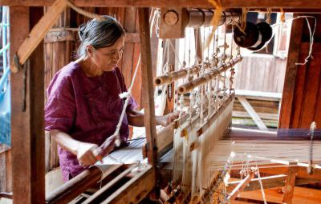
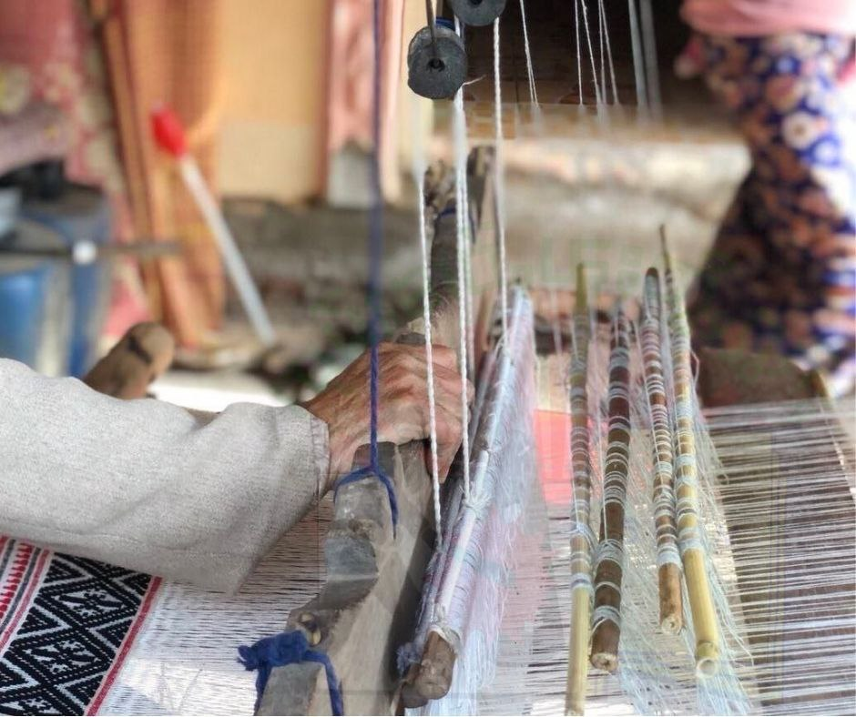

A loom is a mechanism or tool used for weaving yarn and thread into textiles.The earliest art of hand weaving along with hand spinning remains a popular craft. There are different types of weaving looms and these include handloom, frame loom and back strap loom. Looms vary in a wide assortment of sizes. There are two famous types of weaving in Myanmar, machine weaving and hand weaving. Among them, Inle's weaving industy is hand-loomed, and cotton and silk are woven.It takes about 1 month for a hand-woven fabric. As shown in the picture below, not only yarn but also take the stem from the lotus.An inlay is essentially a picture woven into the cloth by "coloring" in a design with yarn or other decorative material. This is accomplished by using extra weft picks that are held in place by a plain (tabby) weave ground cloth. The basic fabric of a handwoven transparency is a sheer but stable plain weave.
|  |  |